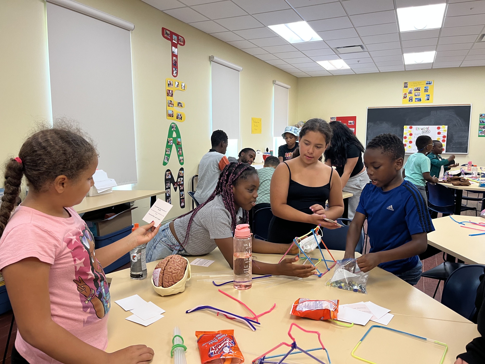
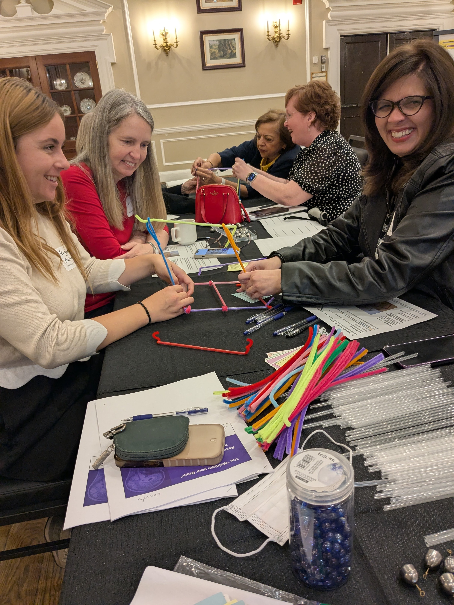
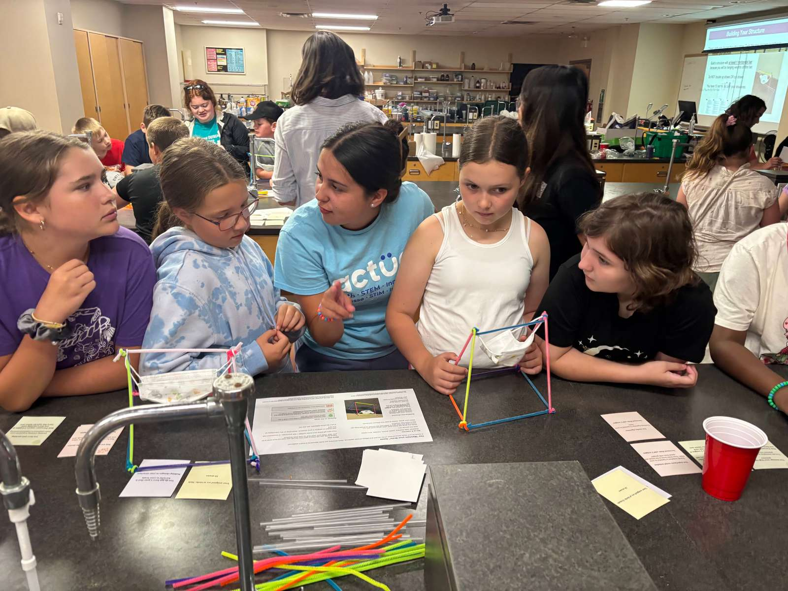
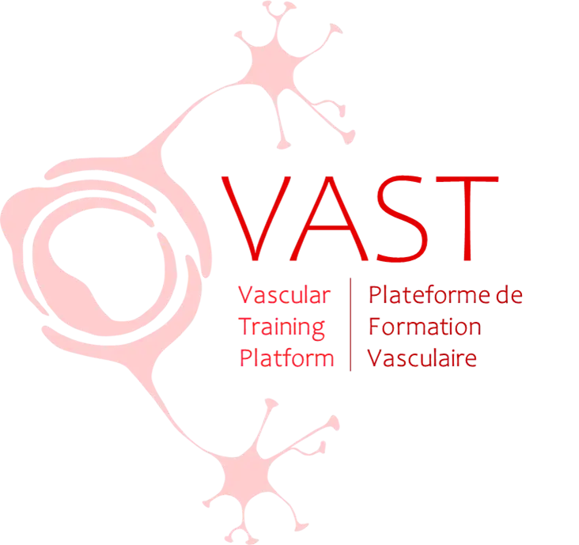

Lifestyle changes could delay or prevent 45% of cognitive impairment, but the general public is typically not aware of this potential. We co-created the Maintaining Brains Game to share research on strategies to maintain and improve brain health!

We co-created our initial draft, the Maintain Your Brain Game, at a workshop funded by the Canadian Institutes of Health Research (CIHR). The workshop brought together people with lived experience of cognitive impairment, Indigenous educators, South Asian educators, healthcare providers, and academic researchers.
Since then, we co-created Maintaining Brains with high school teachers and the national youth-serving organization, Actua. This youth-focused version incorporates trauma-informed principles of agency, strengths-based approaches, and safe environments.

Collaborative development with educators, clinicians, and individuals with lived experience.
The Maintaining Brains Game provides educators with an engaging way to introduce students to concepts related to brain health, cognition, and lifelong wellness.
We reviewed English program Nova Scotia curriculum outcomes and guidelines to identify specific outcomes that the Maintaining Brains Game helps achieve in high school science, health, and psychology classes.
If you use Maintaining Brains in your classroom outside Nova Scotia, we'd love to hear how it went!
mail Contact Us with Feedback
Everything you need to facilitate and play the Maintaining Brains Game in your classroom or community group. Download complete PDF card packages and instruction sheets.
In addition to printed card decks and instruction sheets, game tables use simple low-cost physical items available at dollar stores:
Shaw-Peters L, MacLellan M, Monaghan J, Gilroy-Dreher S, Harrison L, MacGillivray M, Berrigan LI, Gawryluk JR, Phelps J, Fitzgibbon-Collins LK, Mazerolle EL (2026). Montreal, Canada.
Lydia Shaw-Peters (2026). Honours Thesis, Department of Psychology, St. Francis Xavier University.
Want to make your own custom version of the Maintaining Brains Game or populate card templates directly from a spreadsheet? Use our open-source generator tool!
We love working with partners to co-create and evaluate customized versions of the Maintaining Brains Game for their audiences!
Canada's leading STEM outreach organization, collaborating to bring youth-focused brain health literacy to nationwide camps.
Based at StFX, bringing hands-on neuroscience workshops and game trials directly into local elementary and high schools.
Located in Antigonish, NS, collaborating on IB Psychology classroom testing and student discussion frameworks.
We'd love to hear how your students or community group used the game!
